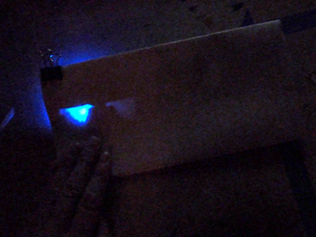

E-textile swatch exchange is an ongoing knowledge exchange project coordinated by Hannah Perner Wilson for the e-textile Summer Camp. Participants exchange swatches of their work in order to share etextiles knowledge. Swatches are distributed and archived into a swatchbook -each year the swatchbooks are made up of all 25 participants’ swatches. For the past few years I have taken part in exchanging swatches of my work with ~25 other practitioners from around Europe and the US.

“Darned and Mended” (more details: http://etextile-summercamp.org/swatch-exchange/darned-and-mended)


“Nuances of diffusion” (more details: http://etextile-summercamp.org/swatch-exchange/nuances-of-diffusion)